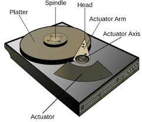

Magnetic disks are flat circular plates of metal or plastic, coated on both sides with iron oxide. Input signals, which may be audio, video, or data, are recorded on the surface of a disk as magnetic patterns or spots in spiral tracks by a recording head while the disk is rotated by a drive unit. The heads, which are also used to read the magnetic impressions on the disk, can be positioned anywhere on the disk with great precision. For computer data-storage applications, a collection of as many as 20 disks (called a disk pack) is mounted vertically on the spindle of a drive unit. The drive unit is equipped with multiple reading/writing heads.
